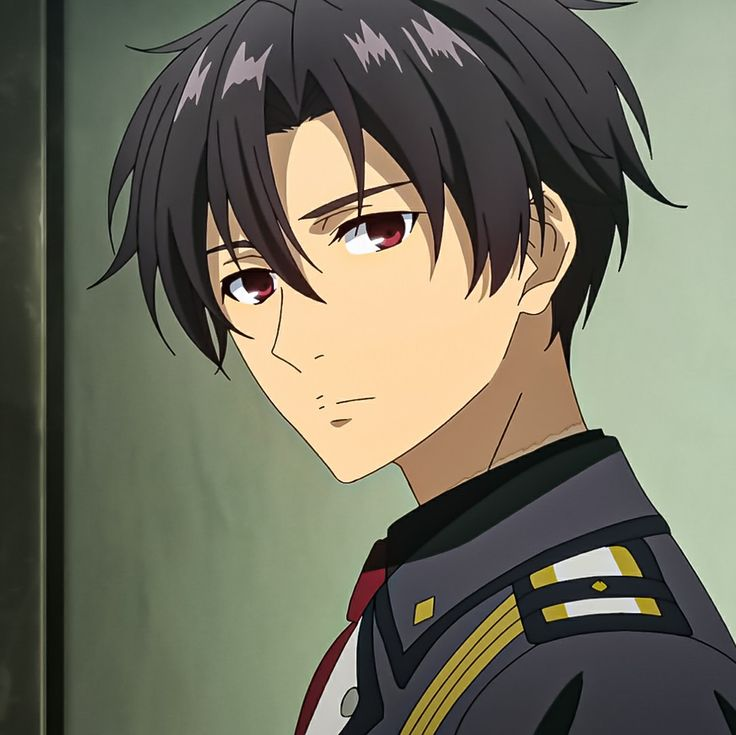
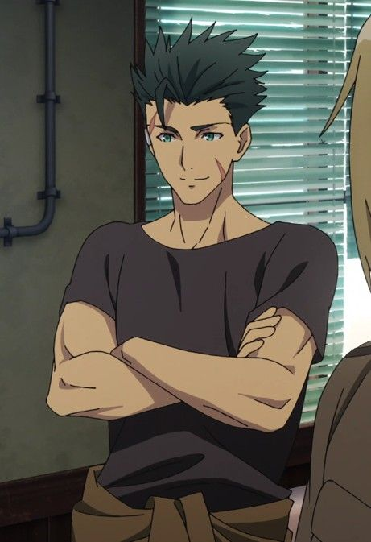
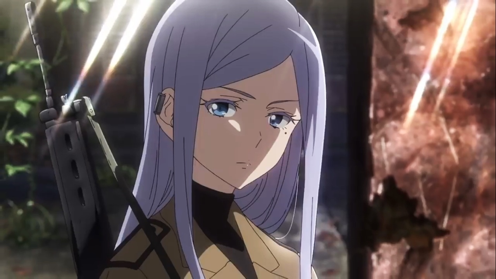
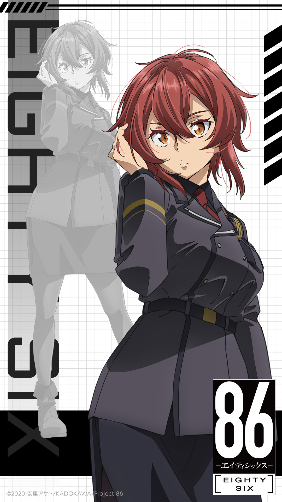
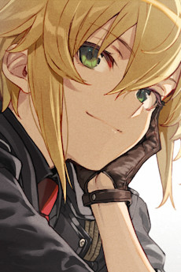
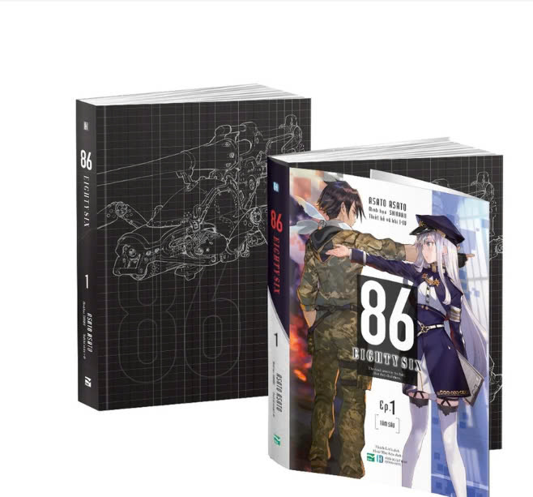

Shin Nouzen: Chiến binh xuất sắc nhất mặt trận phía đông với mật danh "Undertaker" Chỉ huy chiến đội Spearhead.

Vladilena Milizé: Sĩ quan chỉ huy của cộng hoà San Magnolia...
Raiden Shuga: Phó chỉ huy của chiến đội Spearhead mật danh "Werewolf".

Anju Emma: Nòng pháo chủ lực của chiến đội Spearhead mật danh "Snow Witch".

Kurena Kukumila: Chuyên gia bắn tỉa của chiến đội Spearhead mật danh "Gunslinger".

Theoto "Theo" Rikka: Lính trinh sát của chiến đội Spearhead mật danh "Laughing Fox".

Asato Asato: Asato Asato (安里アサト, sinh năm 1984) là một nữ tiểu thuyết gia người Nhật Bản . Bút
danh Asato Asato là sự kết hợp giữa tên thật của cô ( Toru Asakura ) và tám mươi tám.
Hành trình ra đời 86: Ban đầu, cô đã gửi tác phẩm của mình tới giải thưởng Kadokawa Beans Bunko
Rookie, nhưng khi cô bước vào vòng thứ ba Giải thưởng tiểu thuyết Dengeki lần thứ 21 năm 2014, Asato bắt
đầu nghĩ đến việc viết một cuốn tiểu thuyết "giống như tiểu thuyết Dengeki".Cuốn tiểu thuyết này sẽ trở
thành khởi đầu cho loạt truyện 86 -Eighty Sáu-. Năm 2016, 86 -Eighty Six- đã giành giải thưởng tiểu
thuyết Dengeki lần thứ 23.
Nội dung tiểu thuyết 86

Cộng hòa San Magnolia đã có chiến tranh với Đế chế Giad trong chín năm. Mặc dù ban đầu phải chịu tổn thất
nặng nề trước Quân đoàn cơ giới tự trị của Đế chế, nhưng kể từ đó, Cộng hòa đã phát triển các đơn vị tự
trị của riêng mình, được gọi là Juggernauts, được điều khiển từ xa bởi một Người xử lý. Mặc dù trên bề
mặt, công chúng tin rằng cuộc chiến đang diễn ra giữa các cỗ máy, nhưng trên thực tế, Juggernauts đang
được điều khiển bởi con người, tất cả đều là "86" - tên gọi dành cho nhóm thiểu số Colorata của San
Magnolia. Nhóm 86 ban đầu có quyền bình đẳng , nhưng đã bị chủng tộc Alba thống trị và chính quyền Cộng
hòa theo chủ nghĩa tối cao Alba đàn áp và coi là vật tế thần đến mức Colorata vừa được chỉ định chính
thức vừa được coi là thấp kém. Nhóm 86 không được phép có tên riêng và bị giam giữ trong các trại tập
trung ở Quận 86 (nơi họ cùng tên), trong khi vẫn bị buộc phải chiến đấu trong cuộc chiến của Cộng hòa
với Đế chế để được đối xử tốt hơn.